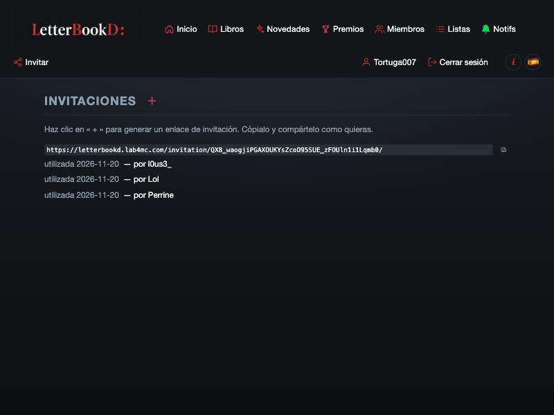

Invitaciones
Para qué sirve: Invitar a un nuevo miembro a uno de tus clubs sin compartir contraseñas. Un clic en «+» genera un enlace que puedes pegar en un correo, un SMS o un mensaje privado: quien lo siga crea su cuenta y se une al club.

Recorrido
La página muestra tus enlaces de invitación existentes: una URL por línea, con su estado (pendiente o «usada el ... por ...»). Un clic en «+» crea un enlace de invitación nuevo y único. IMPORTANTE: cada enlace nuevo invalida el anterior si no se ha usado. Por seguridad, solo puedes tener un enlace activo a la vez. Copia el enlace con el icono correspondiente y compártelo como quieras.
Cadenas de acción
Cada fila describe un disparador en la interfaz, el modal o formulario que abre, y el efecto producido.
| Disparador | Modal / Campos | Efecto |
|---|---|---|
| Botón «+» junto a Invitaciones | Formulario POST sin parámetros. | Genera un nuevo enlace de invitación único (URL firmada). El enlace activo anterior queda desactivado. El nuevo enlace aparece al principio de la lista. |
| Icono «copiar» junto a una URL de invitación | — | Copia la URL al portapapeles. Después puedes pegarla en la herramienta que prefieras. |